| Destination : Europe |
Explications |
Photo |
| Corse |
La Corse est une île située en mer Méditerranée. Venez visitez Ajaccio, Porto-Vecchi où encore Porto pour découvrir l'histoire de la Corse. Vous pourrez dégustez les spécialités Corse comme le lunzu et le figatellu. Partagez une semaine en famille entre mers et montagnes. |
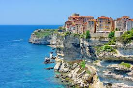 |
| Rome |
Rome, la capitale de l'Itale, est une grande ville cosmopolite dont l'art, l'architecture et la culture de presque 3 000 ans rayonnent dans le monde entier. Ses ruines telles que celles du Forum Romain et du Colisée évoquent la puissance de l'ancien Empire romain. Siège de l'Église catholique romaine, la Cité du Vatican compte la basilique Saint-Pierre et les musées du Vatican où se trouvent des chefs-d'œuvre tels que la fresque de la chapelle Sixtine, peinte par Michel-Ange. |
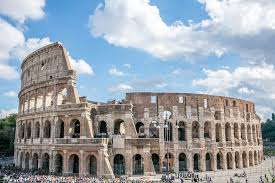 |
| Barcelone |
Barcelone, la capitale cosmopolite de la région espagnole de Catalogne, est réputée pour son art et son architecture. La basilique de la Sagrada Família et d'autres bâtiments emblématiques conçus par Antoni Gaudí sont de parfaits exemples du modernisme catalan. Le musée Picasso et la fondation Joan Miró présentent des œuvres d'art réalisées par les artistes qui leur ont donné leur nom. Le MUHBA, musée d'histoire de Barcelone, présente plusieurs vestiges de l'ancienne ville romaine. |
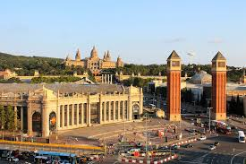 |
| Destination : Asie |
Explications |
Photo |
| Bali |
Bali est une île indonésienne célèbre pour ses montagnes volcaniques boisées, ses rizières, ses plages et ses récifs coralliens. L’île abrite des sites religieux, comme le temple d’Uluwatu construit au sommet d’une falaise à pic. Au sud se trouve la ville balnéaire de Kuta avec ses nombreux bars animés. Les villes de Seminyak, Sanur et Nusa Dua sont également des stations balnéaires très fréquentées. Bali est aussi connue pour ses retraites spirituelles, incluant notamment la pratique du yoga et de la méditation. |
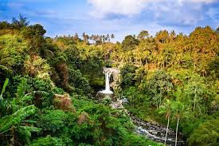 |
| Bornéo |
Bornéo est une île vaste à la beauté sauvage située dans l'archipel malais, en Asie du Sud-Est. Partagée par les états malais de Sabah et de Sarawak, Kalimantan, la partie indonésienne, et le petit État du Brunei, elle est connue pour ses plages, mais aussi pour sa forêt tropicale ancienne d'une grande biodiversité, avec notamment des orangs-outans et des panthères nébuleuses. À 4 095 mètres d'altitude, le mont Kinabalu, dans l'État de Sabah, est le point culminant de l'île. Au large se trouve le célèbre spot de plongée de l'île de Sipadan. |
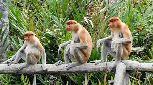 |
| Cambodge |
Le Cambodge est un pays d’Asie du Sud-est aux paysages variés : plaines de basse altitude, delta du Mékong, montagnes et littoral du golfe de Thaïlande. Phnom Penh, sa capitale, abrite le Marché central art déco, l’étincelant Palais royal et les expositions historiques et archéologiques du Musée national du Cambodge. Dans le nord-ouest du pays, on peut admirer les ruines du temple d’Angkor Vat, un immense complexe en pierre bâti sous l’Empire khmer. |
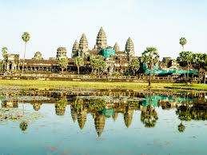 |
| Destination : Amérique |
Explications |
Photo |
| Mexique |
Situé entre les États-Unis et l'Amérique centrale, le Mexique est un pays réputé pour ses plages du Pacifique et du golfe du Mexique, ainsi que pour ses paysages variés - entre montagnes, déserts et jungles. Il est pourvu de ruines anciennes comme Teotihuacan et la cité maya de Chichén Itzá ainsi que de villes datant de l'époque coloniale espagnole. Sa capitale Mexico propose un retour à la modernité avec ses boutiques haut de gamme, ses musées renommés et ses restaurants gastronomiques. |
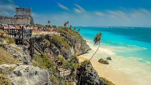 |
| Las Vegas |
Las Vegas, dans le désert de Mojave dans le Nevada, est une ville réputée pour sa vie nocturne animée, ses casinos ouverts 24 h/24 et autres divertissements. Le point central de la ville correspond à sa rue principale, The Strip, longue d'un peu plus de 4 miles. Ce boulevard abrite des hôtels à thème et des créations élaborées comme les fontaines synchronisées avec la musique ainsi que des répliques de monuments connus : pyramide égyptienne, Grand Canal de Venise, et Tour Eiffel. |
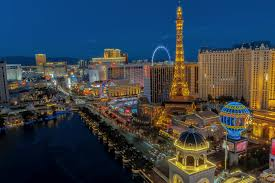 |
| Rio de Janeiro |
Rio de Janeiro est une grande ville du Brésil située en bord de mer. Elle est connue pour ses plages de Copacabana et d'Ipanema, sa statue du Christ Rédempteur de 38 mètres de haut située au sommet du Corcovado et le Pain de Sucre, pic de granite dont le sommet est accessible via 2 téléphériques. La ville est également connue pour ses favelas tentaculaires (bidonvilles). Le célèbre carnaval de Rio, avec défilés de chars, costumes flamboyants et danseurs de samba, est considéré comme l'un des plus grands au monde. |
 |
| Destination : Océanie |
Explications |
Photo |
| Iles Fidji |
Les Fidji, pays du Pacifique Sud, sont un archipel composé de plus de 300 îles. L'endroit est célèbre pour ses paysages à la beauté sauvage, ses plages bordées de palmiers, ses récifs de corail et ses lagons aux eaux cristallines. Ses principales îles, Viti Levu et Vanua Levu, concentrent la majeure partie de la population. Suva, ville portuaire de style colonial anglais, se trouve sur Viti Levu. Le Fiji Museum, situé dans les jardins de Thurston, qui datent de l'époque victorienne, présente des expositions ethnographiques. |
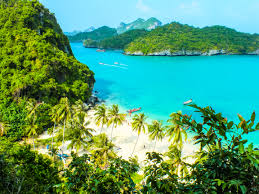 |
| Sydney |
Sydney, capitale de la Nouvelle-Galles du Sud et l'une des plus grandes villes d'Australie, est renommée pour son opéra situé dans le port, avec son design distinctif en forme de voiles. Le vaste Darling Harbour et le plus petit port de Circular Quay sont des pôles majeurs de la vie au bord de l'eau, à proximité du Harbour Bridge et des jardins botaniques royaux. La plate-forme extérieure de Sydney Tower, le Skywalk, offre une vue à 360 degrés sur la ville et ses banlieues. |
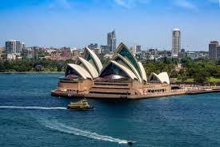 |
| Nouvelle-Calédonie |
La Nouvelle-Calédonie est un territoire français constitué de dizaines d'îles dans le Pacifique Sud. Elle est réputée pour ses plages bordées de palmiers et son lagon propice au développement de la vie marine, qui, avec ses 24 000 kilomètres carrés, fait partie des plus grands au monde. Une immense barrière de corail entoure l'île principale, la Grande Terre, destination prisée pour la plongée sous-marine. Nouméa, la capitale, abrite des restaurants d'influence française et des boutiques de luxe à la mode de Paris. |
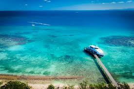 |
| Destination : Afrique |
Explications |
Photo |
| Algérie |
L'Algérie est un pays nord-africain doté d'un littoral sur la mer Méditerranée et d'un intérieur désertique, le Sahara. De nombreux empires y ont laissé leur marque, comme les anciennes ruines romaines de Tipasa, en bord de mer. Dans la capitale, Alger, des sites ottomans, tels que la mosquée Ketchaoua, datant de 1612 environ, bordent le quartier de la Casbah. Perché sur une colline, cet endroit dispose d'allées étroites et d'escaliers. La basilique Notre-Dame d'Afrique, arborant une architecture néo-byzantine, date de la domination coloniale française. |
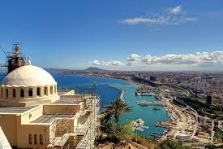 |
| Afrique du sud |
L'Afrique du Sud est un pays situé à l'extrémité australe du continent africain et composé de différents écosystèmes. À l'intérieur des terres, le parc national Kruger abrite du gros gibier et propose des safaris. Le Cap occidental offre des plages, des vignobles luxuriants autour de Stellenbosch et Paarl, des falaises rocheuses au cap de Bonne-Espérance, des forêts et des lagons le long de la Garden Route, ainsi que la ville du Cap, située au pied de la montagne de la Table au sommet plat. |
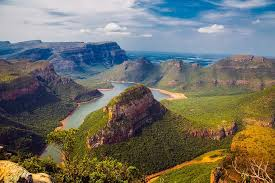 |
| Madagascar |
Madagascar est une île immense et un pays situé au large de la côte sud-est de l'Afrique. Il abrite des milliers d'espèces animales endémiques comme les lémuriens, ainsi que des forêts tropicales, des plages et des récifs. À proximité de l'effervescente capitale, Antananarivo, se trouve la colline d'Ambohimanga, un ensemble de palais royaux et de cimetières, ainsi que l'Avenue des Baobabs, une route de terre bordée d'arbres géants vieux de plusieurs siècles. |
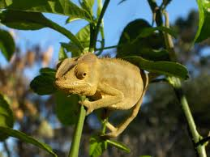 |